The Beginning of Spartania
Looking back, the first part of the name is simple to explain. People knew that AC stood for Aeternus Callous, but everyone always called it AC. With this in mind, Burnturrek simply made the abbreviation the official clan name. When people asked what the AC stood for, the answer was 'it has no meaning'.
The reason he added 'ReUnited' has to do with his ambitions and goals for the clan. Back then the clan was falling apart with more and more members either becoming inactive or quitting. But Burnturrek was still determined to bring glory to the clan. He wanted to 'reunite' the clan he loved, maybe with different members, but in the end his ambition was to create a united AC that was stronger than the rest. Better than the rest. AC deserved glory and for that cause the clan had to be reunited as one again.
With Burnturrek as its leader, a lot of changes were made to the clan. A lot of members joined and left but the clan was healing again. A solid core was created. A core of people loyal to the cause and to the clan. These people are still in the clan even today, Amaya, LightningKakashi, Valex, Ajalaw, Urizen, N!kk!, Mihawk & Adojin. But also people who joined on a later date such as 00fly00, T-Red, Joe5, HiNxPeR and the family duo Ikezod and Lonsave. These people have stayed loyal to AC-R and lived it's history with it.
There are many great names to be mentioned when it comes down to honouring the loyalty that was shown. Names of people that are perhaps not found on the clan list anymore, but names that belong to people that will never be forgotten.
A Plague Yet Unknown
After Wespro revived Naruto-arena, old AC-R members either had quit or had no idea the game was back. Only a few were still around. Two of those were Clydee and Envy. Envy had been playing the game less frequently whilst Clydee was stationed at a decent clan. At the time when said clan was dying, Clydee got in contact with Deity, who at the time had shown some interest in bringing back AC-R. It was decided. The epitome of what a strong clan built on good foundations had to come back. The pinnacle of loyalty and quality. AC-R was coming back!
While Clydee was taking care of the early recruitment for the revival, he had to get Envy on board. Although they simultaneously worked on recruiting, they both knew their specialties, so it was smooth sailing from that point on. Clydee took a leadership role taking care of managing the clan, enforcing certain regulations and making sure new members knew what being a part of Spartania truly meant. Envy worked with the warriors and the war scene. During this time, Djack who played another game with Dersh informed him that N-A was back. He quickly hopped into the NAC server greeted by Envy telling him that AC-R had been revived. Some of the people that got on board were proven veterans such as Dersh, Envy, Clyde and Chuan. But most were new recruits such as Nasro, Wicked, Seph and Kenzo. This new roster of AC-R got their hands on the clan´s first ring on this N-A (SC8). Kenzo acquired an MVP for SC8 achieving an impressive 5-1 record. Shoutout to Wicked for being second in line for MVP with a 5-1 record, only losing in the finals which Kenzo had won in and secured the MVP. A sign things were going well. The clan not only nurtured great warriors but the name AC-R embedded pride and restored greatness once again.
An Embarrassment of Riches
Not long after, a dark cloud hovered over all of N-A. His name was Kein and he had the game shutdown, killing a significant part of the player base. Multiple clans just all fell off like woodwork. This plague of inactivity made it quite tough to cure the clan with newer faces. This was due to the fact that former players had given up or ventured elsewhere . This short period did not last long, as the clan was replenished with new players such as Axe, Zera, Zn and Yomi, who were all ready to take over the war scene once again. Alongside them, AC-R was blessed with the entrance of Betrayer and Sosuke. Two amazing gfxers who provided the clan with astonishing graphics and a vital part of making this thread. These new personalities were a very important part of why we got two new rings so quickly (Wings of Freedom and Dream Chasers). Yomi rose through the ranks quickly getting the title of Royal Guard and even achieving MVP in Wof and Finals MVP in DreamChasers. Once again, AC-R has shown everyone that it can win it all in every timeline of N-A. AC-R is the embodiment of prestige and high class. ‘Form is temporary, but class is permanent’.
Bloodlust
As time goes on, it's only natural that the clan adapts alongside it. Some players retire and new members arrive. Some of our new acquisitions were TrashGoated, Aupateite, AusBee and Cley. This new roster of AC-R alongside OG members proved its dominance with the conquering of another ring for the legacy of the clan (Clow Chronicles). Another event where our Hokage got MVP. There's things that even time cannot change. The core values of the clan must and have been preserved through all these years. Loyalty and quality is what defines a Spartan.
Acres Caelestes - ReUnited is a clan made for glory and glorious it will be. It has been in the past, it will be in the present and it shall also be in the future. We are the Cockroaches that will never die.
 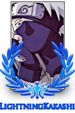
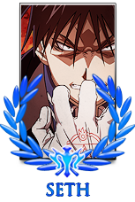
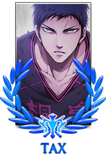
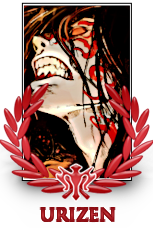
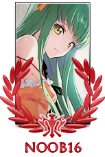
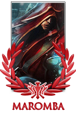
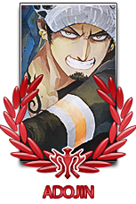
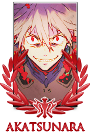
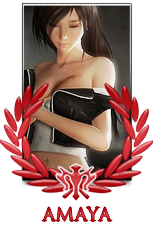
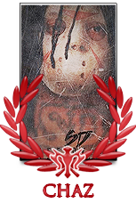
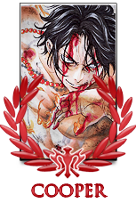
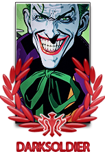
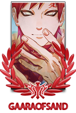
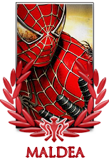
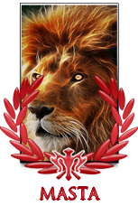
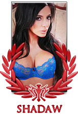
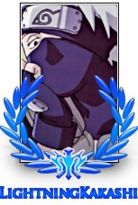
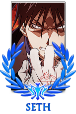
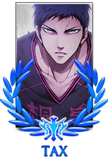
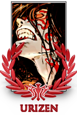
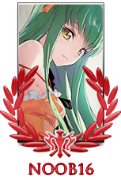
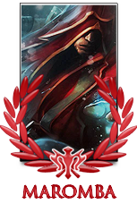
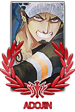
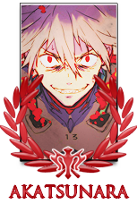
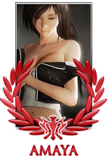
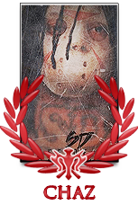
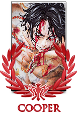
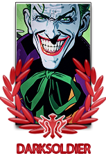
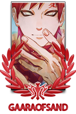
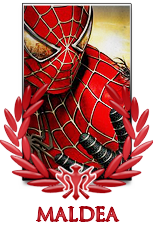
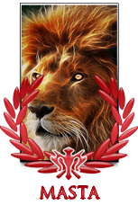
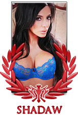